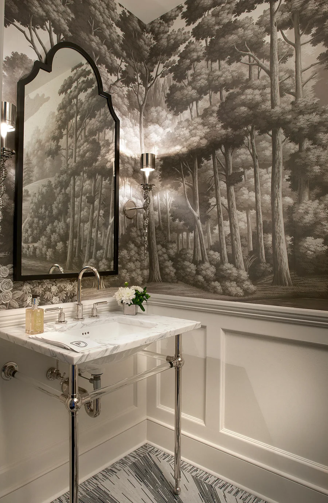
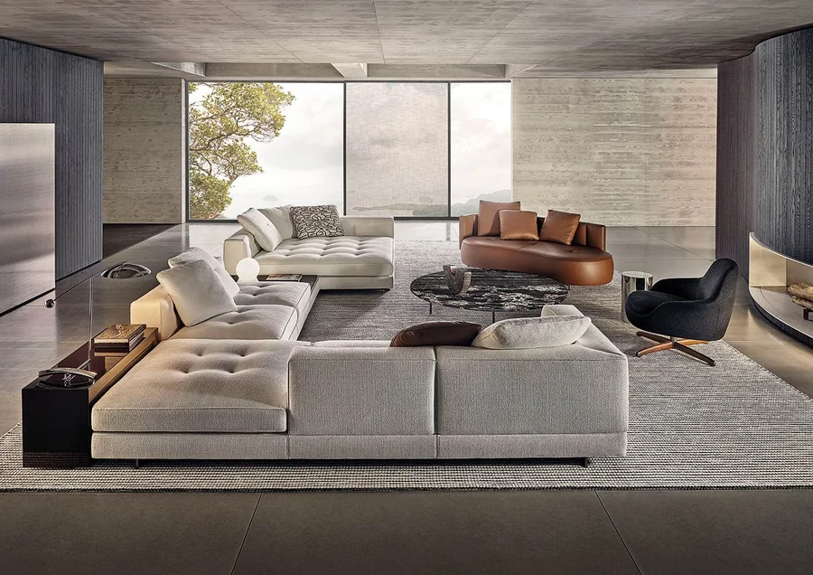
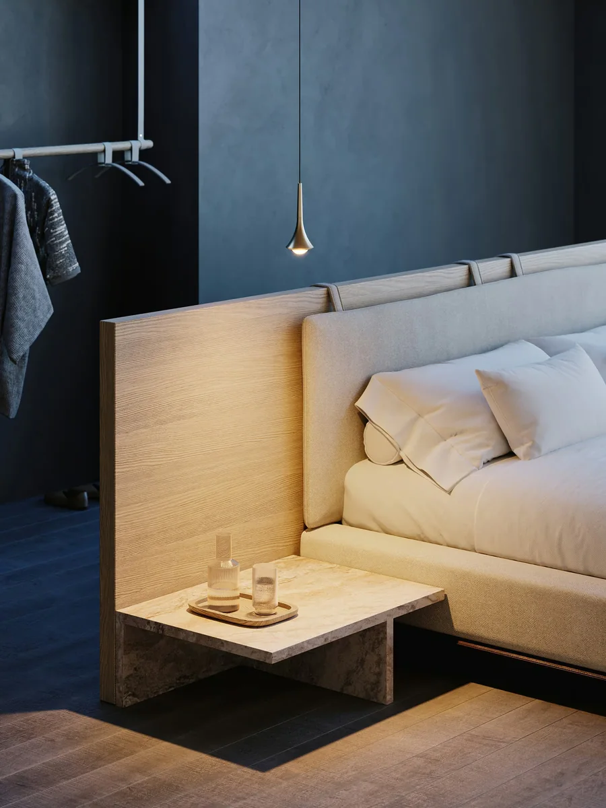
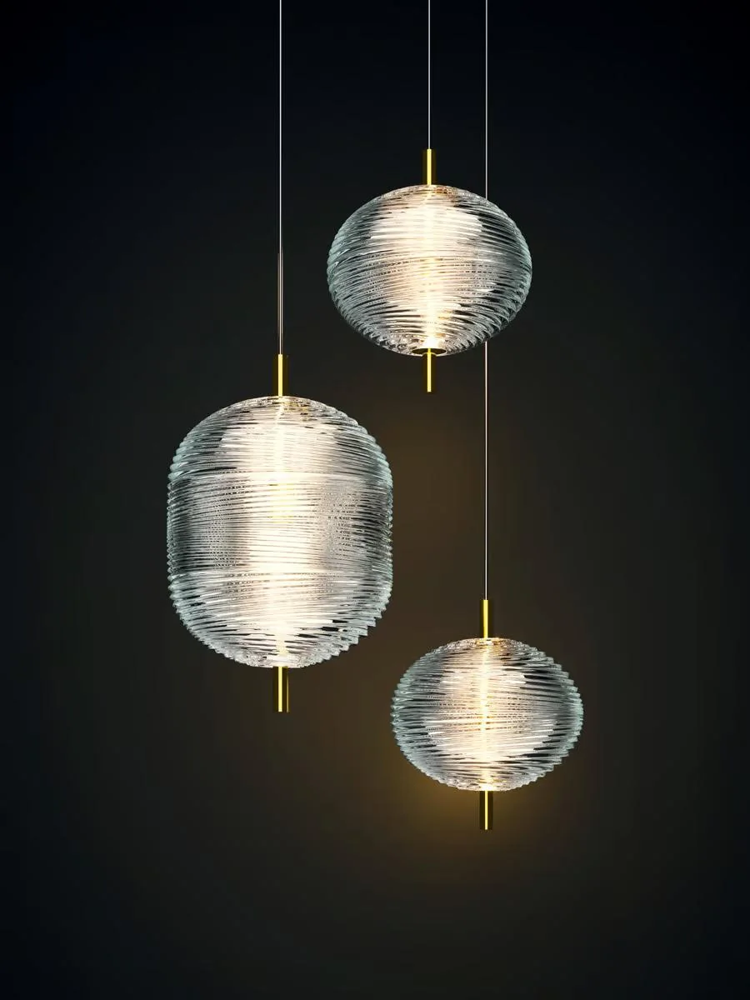
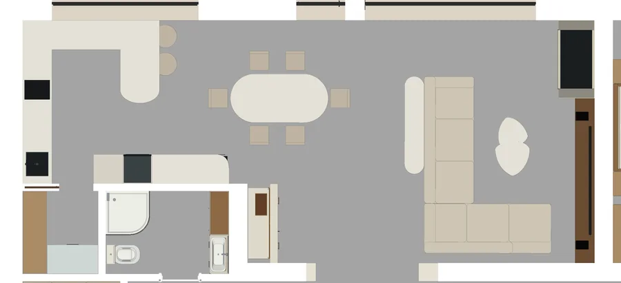

1.08
Кухня-гостиная
Обновлённый образ помещения — вариант для обсуждения. Спокойные стены в светлом бамбуковом шпоне, живописная телевизионная стена, портал с рельефом и диптихом, угловая мягкая группа и овальный стол; кухня с витринами. Планировка, проёмы и остекление — по проекту, расстановка сверена с размерной моделью. Изображения — эскизная визуализация: рисунок камня, фактуры тканей и мелкие детали условны.
{kind=link}
{kind=link}
{kind=link}
{kind=link}
{kind=link}
{kind=link}
{kind=link}
{kind=link}
{kind=link}
{kind=link}
{kind=link}
{kind=link}
{kind=link}
Замысел
Единое пространство кухни, столовой и гостиной под высоким потолком с открытой балкой. Светлый камень, тёплый орех, мягкие формы и тонкая бронза. Стены — в спокойном светлом бамбуковом шпоне; телевизионная стена — светлая живописная композиция с деревьями, её тему продолжает небольшой ботанический диптих у портала. Проём в холл оформлен светлой ступенчатой рамой с неглубоким рельефом над ней. Единая угловая мягкая группа очерчивает зону общения перед телевизором и камином; овальный стол на шесть мест, кухня с молочными фасадами, ореховыми плоскостями и стеклянными витринами, встроенный бар с подсвеченной витриной. Локальный свет — три хрустальных подвеса над столом и два направленных светильника над полуостровом; вечером общий свет можно приглушить, оставив акценты и подсветку цоколя и витрин.
Что здесь нарисовано
Рядом с каждым предметом — что это в жизни: изделие производителя, вещь на заказ или позиция, которая ещё подбирается. Новые позиции этой версии предложены для обсуждения и не утверждены к заказу.
Стены, панно и портал
рисунок панно, оттенки и образцы — до заказа
Светлый фон связывает живопись, рельеф, камень и дерево; металл остаётся тонким акцентом. Панно создаются как законченные композиции для своих полей.
- Спокойные стены Светлый бамбуковый шпон 0,6 мм — ровная матовая поверхность с мягким природным ритмом; основа для подбора — MOSO Bamboo Veneer, Side Pressed EcruИзделие производителяСтраница производителя
-
Телевизионная стена

Светлая живописная композиция с деревьями, дымчатый рисунок на тёплом фоне — индивидуальное панно; технология заказной пейзажной живописи de GournayНа заказполе шириной 2875 ммПример технологии - Ботанический диптих Два согласованных рисунка с деревьями в тонком обрамлении — продолжение темы телевизионной стены; композиция по развёртке, рисунок и палитра по образцуНа заказ2 поля по 600 × 1400 мм
- Портал в холл Светлая каменная или окрашенная ступенчатая рама снаружи проёма с тонкой бронзовой линией; заказной узел, поверхность по образцуНа заказнаружная ширина 2500 мм, верх на 2800 мм; световой проём 2100 × 2600 мм
- Рельеф над порталом Неглубокий вертикальный рельеф, матовая окраска в тон стене; панели Orac W110 HILLИзделие производителяполе 2300 × 1100 ммСтраница производителя
- Пол и камин Светлая каменная фактура со спокойным рисунком — мягкий блеск пола, сдержанная облицовка камина; камень или керамогранит, артикул подбирается по образцуПодбирается
Гостиная
угловая мягкая группа
Около пяти мест с опорой на спинку и открытый край короткой ветви для свободной посадки; шесть подушек не означают шесть равноценных мест для долгого просмотра.
-
Мягкая группа

Minotti Dylan Low, композиция 03 — угловая, из двух фабричных модулей; светлая обивка и бронзовое основаниеИзделие производителя3620 × 2600 мм, высота 810 ммСхема производителя - Журнальная группа и консоль Скруглённые столики и узкая консоль за диваном в светлой каменной отделке — на заказНа заказ
- Телевизор и тумба Медиатумба в орехе; телевизор по проекту 98 дюймов, модели не выбраныПодбирается
Столовая
Подбирается — образ и размеры зафиксированы, изделия выбираются
- Овальный стол Светлая поверхность, шесть мягких стульев; скруглённая форма сохраняет плавность движения вокруг группы2000 × 1000 мм в разложенном виде
Бар
На заказ — решение принято ранее и сохраняется
- Витрина Орех, зеркало, стекло и тонкая бронза; подсветка подчёркивает глубину витрины, нижняя решётка винного шкафа открыта1450 × 460 × 3700 мм, основание глубиной 620 мм
- Винный шкаф Meyvel MV28-KBT2Изделие производителяСтраница производителя
Кухня
На заказ — изготавливается по чертежам, техника подбирается
- Кухня Молочные нижние фасады, ореховые плоскости и стеклянные витрины; светлое завершение объединяет верх кухни с высоким объёмомверх шкафов на 2300 мм, второй ярус до 2750 мм, завершение на 3100 мм
- Антресоль над мойкой Компактный корпус, продолжающий линию шкафов; свет снизу освещает мойку; фурнитура-кандидат — Blum Aventos HK top950 × 300 × 370 мм, низ на 1930 ммФурнитура
- Полуостров Со стороны гостиной — барные места; стулья не выбраныПодбирается
- Техника Духовой шкаф, варочная панель, холодильник, мойка и смесительПодбирается
- Подсветка Рабочая линия, цоколь, витрины и верхнее завершение — отдельные группы; артикулы не выбраныПодбирается
Свет
изделия предложены; потолочные основания, питание и диммирование уточняются
-
Над полуостровом

Lodes Rain, 2 шт., матовый шампань, тёплый свет 2700 K; низ на 900 мм над столешницейИзделие производителяØ 85 × 210 ммТехническая карта -
Над столом

Lodes Jefferson, три подвеса (mini, small, mini) — прозрачный хрусталь и тёплый металл, 2700 K; нижние точки на 800, 900 и 1000 мм над столомИзделие производителяØ 150 ммТехническая карта - Встроенные светильники По проекту, тёплый свет; модель уточняетсяПодбирается
Окна
Подбирается — ткани, уход и крепления — по реальному окну
- Высокие окна гостиной Светлые портьеры и молочный полупрозрачный тюль на карнизе в высоком проёме; в видах раздвинуты максимально
- Кухонное окно Компактная римская штора из ткани для регулярного ухода; показана поднятой
Посуда, растения, книги и предметы на полках — антураж кадра. Сад и лес за окнами — образ участка по проекту, не фотография. Шторы показаны раздвинутыми; закрытое состояние в эту версию не входит.
Подробнее
Мягкая группа и телевизор
Единая угловая композиция: около пяти мест с опорой на спинку и открытый край для свободной посадки. Диван стоит с небольшим отступом от стены — 200 мм, у обрамления портала около 134 мм; это визуальный зазор, а не проход. От дивана до ближайшего журнального столика 434 мм, от глаз сидящих до экрана около 2,9 м. Между открытым концом дивана и медиатумбой 487 мм — местный интервал, не основной проход.
Проходы
Диван не заходит в проекцию проёма в холл; узкая консоль за ним входит в неё на 287 мм. Между консолью и ближайшим обеденным стулом 1118 мм. От дивана до линии остекления 1155 мм — собранные портьеры могут местами уменьшать этот запас. Вход в кладовую — из рабочей зоны кухни.
Портал и рельеф
Проём в холл получает светлую ступенчатую раму снаружи проёма — шириной 2500 мм с верхом на 2800 мм; световой проём 2100 × 2600 мм. Над рамой — поле рельефа 2300 × 1100 мм на высоте от 3,05 до 4,15 м, соразмерное высокому пространству. Диптих 2 × 600 × 1400 мм рядом связывает портал с телевизионной стеной.
Свет
Три хрустальных подвеса разной высоты образуют спокойный каскад над овальным столом; два компактных направленных светильника — над полуостровом. Подсветки цоколя, витрин и верхнего завершения кухни отделяют мебель от плоскостей комнаты, рабочая линия освещается отдельно. Общий свет, подвесы и фоновая подсветка регулируются раздельно — настроение комнаты меняется без изменения её оформления.
Окна
Высокие окна гостиной — светлые портьеры и молочный тюль на карнизе в проёме; в видах они раздвинуты максимально ради дневного света и вида на сад. Кухонное окно — компактная римская штора: поднятое полотно открывает окно и не занимает поверхность у мойки.
За окнами
Терраса — существующая, по проекту. За ней показаны предлагаемый декоративный сад, газон и лесное окружение участка. Это образ, а не фотография: точная панорама, посадки и благоустройство не выбраны.
Что уточняется до заказа
- Посадка: удобство мест и открытого края — пробная посадка на образцах; ткань по фабричным образцам
- Портал, панели, верхний ярус кухни и стекло витрин: крепления; сервисный доступ к вытяжке и вентиляция оборудования
- Свет: потолочные основания под скаты, схема питания и диммирования — по светотехническому расчёту
- Винный шкаф: монтаж, вентиляция и ход двери проверяются по инструкции конкретной ревизии; ниша 400 × 860 × 620 мм
- Образцы: оттенки камня, бамбукового шпона, ореха, ткани и бронзы — при дневном и вечернем свете
- Не назначены: артикулы пола и облицовки камина, обеденная мебель, часть заказных элементов
Из референсов
Какие приёмы из подборки легли в основу помещения — взят приём, а не чужая комната.
-
 REF-017
Коллаж дерева, камня, зелени и золотистых деталей
Палитра: молочный, орех, светлый камень и тёплый металл.
REF-017
Коллаж дерева, камня, зелени и золотистых деталей
Палитра: молочный, орех, светлый камень и тёплый металл.
-
 REF-009
Декоративные панели и деревянная отделка
Стеновые панели в природной фактуре — здесь светлый бамбуковый шпон на спокойных стенах.
REF-009
Декоративные панели и деревянная отделка
Стеновые панели в природной фактуре — здесь светлый бамбуковый шпон на спокойных стенах.
-
 REF-016
Светлая кухня с каменным обрамлением проёма
Крупная светлая рама проёма — ступенчатый портал в холл; стеклянные створки в этой версии не показаны.
REF-016
Светлая кухня с каменным обрамлением проёма
Крупная светлая рама проёма — ступенчатый портал в холл; стеклянные створки в этой версии не показаны.
-
 REF-019
Гостиная с пейзажным панно и фактурным столом
Деревья на светлом фоне — телевизионная стена и ботанический диптих.
REF-019
Гостиная с пейзажным панно и фактурным столом
Деревья на светлом фоне — телевизионная стена и ботанический диптих.
-
 REF-022
Камин с контрастной облицовкой и тёмными рейками
Самостоятельный камин в сдержанной светлой облицовке; тёмный рисунок и рейки исключены.
REF-022
Камин с контрастной облицовкой и тёмными рейками
Самостоятельный камин в сдержанной светлой облицовке; тёмный рисунок и рейки исключены.
-
 REF-039
Кухня-гостиная со светлым модульным диваном
Большая модульная угловая группа — Minotti Dylan Low.
REF-039
Кухня-гостиная со светлым модульным диваном
Большая модульная угловая группа — Minotti Dylan Low.
-
 REF-052
Деревянный бар со стеклянными полками
Бар: дерево и подсвеченные стеклянные полки — витрина P07.
REF-052
Деревянный бар со стеклянными полками
Бар: дерево и подсвеченные стеклянные полки — витрина P07.
-
 REF-051
Бар с синими рифлёными фасадами
Зеркальный фон и тонкая бронза в баре.
REF-051
Бар с синими рифлёными фасадами
Зеркальный фон и тонкая бронза в баре.
По проекту

- 50,73 м², Г-образный контур; кухня у западной стены, гостиная у остекления и камина
- Потолок из двух скатов, высота от 3,95 до 5,43 м; открытая стальная балка
- Панорамное остекление в сторону террасы и сада; высокое окно гостиной около 3500 × 4850 мм, кухонное окно 3000 × 1750 мм в три секции
- Проём в холл 1.04 — 2700 × 2600 мм, прямоугольный, без створок
- Дверь в кладовую 1.09 — из рабочей зоны кухни, 700 × 2100 мм
- Камин с коробом до потолка и собственным дымоходом; телевизор 98 дюймов
- Освещение по проекту: 27 встроенных светильников, 4 подвеса над полуостровом и 3 подвеса в гостиной
